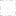

<!doctype html>
<html lang="en">
    <head>
        <meta charset="utf-8">
        <meta http-equiv="X-UA-Compatible" content="IE=edge">
        <meta name="viewport" content="initial-scale=1,user-scalable=no,maximum-scale=1,width=device-width">
        <meta name="mobile-web-app-capable" content="yes">
        <meta name="apple-mobile-web-app-capable" content="yes">
        <link rel="stylesheet" href="css/leaflet.css">
        <link rel="stylesheet" href="css/qgis2web.css"><link rel="stylesheet" href="css/fontawesome-all.min.css">
        <link rel="stylesheet" href="css/MarkerCluster.css">
        <link rel="stylesheet" href="css/MarkerCluster.Default.css">
        <style>
        html, body, #map {
            width: 100%;
            height: 100%;
            padding: 0;
            margin: 0;
        }
        </style>
        <title></title>
    </head>
    <body>
        <div id="map">
        </div>
        <script src="js/qgis2web_expressions.js"></script>
        <script src="js/leaflet.js"></script>
        <script src="js/leaflet.rotatedMarker.js"></script>
        <script src="js/leaflet.pattern.js"></script>
        <script src="js/leaflet-hash.js"></script>
        <script src="js/Autolinker.min.js"></script>
        <script src="js/rbush.min.js"></script>
        <script src="js/labelgun.min.js"></script>
        <script src="js/labels.js"></script>
        <script src="js/leaflet.markercluster.js"></script>
        <script src="data/BhutanBoundary_1.js"></script>
        <script src="data/points_2.js"></script>
        <script>
        var highlightLayer;
        function highlightFeature(e) {
            highlightLayer = e.target;

            if (e.target.feature.geometry.type === 'LineString') {
              highlightLayer.setStyle({
                color: '#ffff00',
              });
            } else {
              highlightLayer.setStyle({
                fillColor: '#ffff00',
                fillOpacity: 1
              });
            }
            highlightLayer.openPopup();
        }
        var map = L.map('map', {
            zoomControl:true, maxZoom:10, minZoom:1
        })
        var hash = new L.Hash(map);
        map.attributionControl.setPrefix('<a href="https://github.com/tomchadwin/qgis2web" target="_blank">qgis2web</a> &middot; <a href="https://leafletjs.com" title="A JS library for interactive maps">Leaflet</a> &middot; <a href="https://qgis.org">QGIS</a>');
        var autolinker = new Autolinker({truncate: {length: 30, location: 'smart'}});
        var bounds_group = new L.featureGroup([]);
        function setBounds() {
            if (bounds_group.getLayers().length) {
                map.fitBounds(bounds_group.getBounds());
            }
            map.setMaxBounds(map.getBounds());
        }
        map.createPane('pane_OpenStreetMap_0');
        map.getPane('pane_OpenStreetMap_0').style.zIndex = 400;
        var layer_OpenStreetMap_0 = L.tileLayer('http://tile.openstreetmap.org/{z}/{x}/{y}.png', {
            pane: 'pane_OpenStreetMap_0',
            opacity: 1.0,
            attribution: '<a href="https://www.openstreetmap.org/copyright">© OpenStreetMap contributors, CC-BY-SA</a>',
            minZoom: 1,
            maxZoom: 10,
            minNativeZoom: 0,
            maxNativeZoom: 19
        });
        layer_OpenStreetMap_0;
        map.addLayer(layer_OpenStreetMap_0);
        function pop_BhutanBoundary_1(feature, layer) {
            layer.on({
                mouseout: function(e) {
                    for (i in e.target._eventParents) {
                        e.target._eventParents[i].resetStyle(e.target);
                    }
                    if (typeof layer.closePopup == 'function') {
                        layer.closePopup();
                    } else {
                        layer.eachLayer(function(feature){
                            feature.closePopup()
                        });
                    }
                },
                mouseover: highlightFeature,
            });
            var popupContent = '<table>\
                    <tr>\
                        <td colspan="2">' + (feature.properties['NAME_2'] !== null ? autolinker.link(feature.properties['NAME_2'].toLocaleString()) : '') + '</td>\
                    </tr>\
                </table>';
            layer.bindPopup(popupContent, {maxHeight: 400});
        }

        function style_BhutanBoundary_1_0() {
            return {
                pane: 'pane_BhutanBoundary_1',
                opacity: 1,
                color: 'rgba(35,35,35,1.0)',
                dashArray: '10,5,1,5',
                lineCap: 'butt',
                lineJoin: 'miter',
                weight: 1, 
                fill: true,
                fillOpacity: 1,
                fillColor: 'rgba(196,60,57,0.0)',
                interactive: false,
            }
        }
        map.createPane('pane_BhutanBoundary_1');
        map.getPane('pane_BhutanBoundary_1').style.zIndex = 401;
        map.getPane('pane_BhutanBoundary_1').style['mix-blend-mode'] = 'normal';
        var layer_BhutanBoundary_1 = new L.geoJson(json_BhutanBoundary_1, {
            attribution: '',
            interactive: false,
            dataVar: 'json_BhutanBoundary_1',
            layerName: 'layer_BhutanBoundary_1',
            pane: 'pane_BhutanBoundary_1',
            onEachFeature: pop_BhutanBoundary_1,
            style: style_BhutanBoundary_1_0,
        });
        bounds_group.addLayer(layer_BhutanBoundary_1);
        map.addLayer(layer_BhutanBoundary_1);
        function pop_points_2(feature, layer) {
            layer.on({
                mouseout: function(e) {
                    for (i in e.target._eventParents) {
                        e.target._eventParents[i].resetStyle(e.target);
                    }
                    if (typeof layer.closePopup == 'function') {
                        layer.closePopup();
                    } else {
                        layer.eachLayer(function(feature){
                            feature.closePopup()
                        });
                    }
                },
                mouseover: highlightFeature,
            });
            var popupContent = '<table>\
                    <tr>\
                        <th scope="row">latitude</th>\
                        <td>' + (feature.properties['latitude'] !== null ? autolinker.link(feature.properties['latitude'].toLocaleString()) : '') + '</td>\
                    </tr>\
                    <tr>\
                        <th scope="row">longitude</th>\
                        <td>' + (feature.properties['longitude'] !== null ? autolinker.link(feature.properties['longitude'].toLocaleString()) : '') + '</td>\
                    </tr>\
                    <tr>\
                        <th scope="row">Dzongkhag</th>\
                        <td>' + (feature.properties['Dzongkhag'] !== null ? autolinker.link(feature.properties['Dzongkhag'].toLocaleString()) : '') + '</td>\
                    </tr>\
                    <tr>\
                        <th scope="row">Gewog</th>\
                        <td>' + (feature.properties['Gewog'] !== null ? autolinker.link(feature.properties['Gewog'].toLocaleString()) : '') + '</td>\
                    </tr>\
                    <tr>\
                        <th scope="row">Village</th>\
                        <td>' + (feature.properties['Village'] !== null ? autolinker.link(feature.properties['Village'].toLocaleString()) : '') + '</td>\
                    </tr>\
                    <tr>\
                        <th scope="row">Farmer</th>\
                        <td>' + (feature.properties['Farmer'] !== null ? autolinker.link(feature.properties['Farmer'].toLocaleString()) : '') + '</td>\
                    </tr>\
                </table>';
            layer.bindPopup(popupContent, {maxHeight: 400});
        }

        function style_points_2_0() {
            return {
                pane: 'pane_points_2',
                radius: 6.799999999999997,
                opacity: 1,
                color: 'rgba(128,17,25,1.0)',
                dashArray: '',
                lineCap: 'butt',
                lineJoin: 'miter',
                weight: 2.0,
                fill: true,
                fillOpacity: 1,
                fillColor: 'rgba(219,30,42,1.0)',
                interactive: true,
            }
        }
        map.createPane('pane_points_2');
        map.getPane('pane_points_2').style.zIndex = 402;
        map.getPane('pane_points_2').style['mix-blend-mode'] = 'normal';
        var layer_points_2 = new L.geoJson(json_points_2, {
            attribution: '',
            interactive: true,
            dataVar: 'json_points_2',
            layerName: 'layer_points_2',
            pane: 'pane_points_2',
            onEachFeature: pop_points_2,
            pointToLayer: function (feature, latlng) {
                var context = {
                    feature: feature,
                    variables: {}
                };
                return L.circleMarker(latlng, style_points_2_0(feature));
            },
        });
        var cluster_points_2 = new L.MarkerClusterGroup({showCoverageOnHover: false,
            spiderfyDistanceMultiplier: 2});
        cluster_points_2.addLayer(layer_points_2);

        bounds_group.addLayer(layer_points_2);
        cluster_points_2.addTo(map);
        var baseMaps = {};
        L.control.layers(baseMaps,{' points': cluster_points_2,' Bhutan Boundary': layer_BhutanBoundary_1,"Open Street Map": layer_OpenStreetMap_0,},{collapsed:false}).addTo(map);
        setBounds();
        </script>
    </body>
</html>
